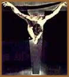

Uma semana
antes de ser executado, Jesus foi recebido como um rei em Jerusalém.
Como foi que o grande mestre aclamado por todos se tornou um
condenado?
Percorra os meandros das manobras políticas que
acabaram levando Jesus à morte.
O poder do grande
Templo de Jerusalém
Nos tempos antigos, havia vários santuários
espalhados pelo país e a prática religiosa estava
muito mais próxima da vida cotidiana do povo. Mas, no
século 7 a.C., uma reforma violenta, realizada de cima
para baixo, modificou profundamente o formato do culto judaico.
Ela ocorreu durante o reinado de Josias, que se estendeu de
640 a 609 a.C.
Sob o pretexto de depurar a religião das
influências pagãs, herdadas dos povos vizinhos,
Josias destruiu os antigos santuários, queimou seus objetos
sagrados, massacrou seus sacerdotes e centralizou o culto em
Jerusalém.
Por trás de seu furor reformista, havia
um inconfessável objetivo político: centralizar
o culto e obrigar o povo a acorrer a Jerusalém nas datas
estabelecidas era uma forma de unificar o país em torno
da casa real de Judá. A centralização do
culto fortaleceu a casta sacerdotal e enriqueceu seus integrantes
mais ilustres.
A cobrança
pelos sacrifícios
Com a desagregação da monarquia,
esse alto clero assumiu o controle da vida nacional. As bases
econômicas de seu poder eram os sacrifícios diários
de animais (bois, carneiros, pombos) e a cobrança de
impostos realizados no Templo. Os animais a serem sacrificados
passavam por um rigoroso controle de qualidade, baseado nas
regras de pureza estabelecidas no livro do Levítico.
Essa "peneira fina" barrava os animais trazidos pelos
fiéis, que, em seu lugar, deviam comprar outros, vendidos
nos pátios do Templo. "Coincidentemente", esses
animais aptos eram criados pelas próprias famílias
sacerdotais ou por grandes proprietários com elas relacionados.
Os preços flutuavam de acordo com a demanda.
E disparavam na época das festas religiosas. Um pombo,
o animal mais barato, chegava a custar então cem vezes
o seu preço normal, sendo comercializado por um denário
(quantia equivalente ao salário pago por um dia de trabalho).
Estudos recentes dão uma idéia
da importância econômica dessas transações.
Eles informam que, numa única data da vida de Jesus,
por ocasião da Páscoa, foram imolados no Templo
nada menos do que 250 mil cordeiros!
O comércio
religioso
Os altos sacerdotes não lucravam apenas
com a venda dos animais. Tiravam proveito também da conversão
do dinheiro utilizado no pagamento. Pois as moedas correntes
não podiam entrar no Templo. O motivo alegado era que
se tratava de dinheiro impuro. Mas a verdadeira causa estava
na corrosão de seu valor real devido à inflação.
Tanto é que as moedas comuns deviam ser trocadas pela
tetradracma tíria, cunhada na cidade de Tiro,
na Fenícia, atual Líbano.
Em matéria de pureza ritual, dificilmente
poderia ser encontrado algo menos adequado do que esse dinheiro
estrangeiro, que trazia, numa das faces, a imagem do deus pagão
Melkart, protetor dos tirenses, e, na outra, a águia
de Júpiter, principal divindade dos romanos. A diferença
é que a tetradracma tíria era uma moeda forte,
que não sofreu qualquer desvalorização
num período de 300 anos. Pela troca do dinheiro, os cambistas,
aliados dos sacerdotes, cobravam um ágio de 8%.
Além dos sacrifícios de animais
e do câmbio, a casta sacerdotal locupletava-se ainda com
a cobrança do dízimo. Todo judeu do sexo masculino,
com mais de 20 anos, era obrigado a pagar. E o Templo possuía
o cadastro de cerca de um milhão de contribuintes, dentro
e fora da Judéia. Não admira que judeus puritanos,
como os essênios, abominassem o sistema econômico-político-religioso
estruturado em torno do Templo.
Muitos deles eram ex-sacerdotes, que haviam renunciado
à sua proveitosa condição por razões
de consciência. Quando Jesus virou as mesas dos cambistas
e expulsou os vendedores de animais do Templo, ele se chocou
de frente contra essa máquina poderosa. A resposta não
se fez esperar. Dias depois, o Sinédrio (o senado de
Israel) o condenou à morte.
A condenação
Controlado
pelas duas famílias sacerdotais mais poderosas de Israel,
as de Anás e Caifás, o Sinédrio - Sanhedrim,
em hebraico - era o braço político do sistema
de poder estruturado em torno do Templo de Jerusalém.
Não por acaso, esse órgão se reunia nas
dependências do Templo, na Sala da Pedra Talhada. A ele
cabiam todas as decisões de natureza legal ou ritual.
E sua autoridade se estendia às populações
judaicas que viviam fora da Palestina. Era composto por 70 membros,
escolhidos entre os homens mais ilustres da comunidade (saduceus,
doutores da lei, fariseus) e presidido pelo sumo sacerdote em
exercício. Foi essa instituição, de certo
modo semelhante ao senado romano, que condenou Jesus.
A ameaça
Jesus
O Sinédrio não se respaldava numa
longa tradição. Pois sua existência remontava
apenas ao século 2 a.C. e encerrou-se em 66 d.C.. Também
não desfrutava de sólida legitimidade política
aos olhos da população, devido a sua política
de colaboração com os romanos. Por isso, seus
chefes se sentiram altamente ameaçados com a entrada
triunfal de Jesus em Jerusalém. Eram suficientemente
ardilosos, porém, para tirar vantagem do desapontamento
popular causado pela recusa de Jesus em assumir o papel de líder
messiânico. Traído pelo zelota Judas quando se
encontrava em oração no monte das Oliveiras e
preso pelos soldados do sumo sacerdote Caifás, o mestre
foi levado a uma masmorra existente na casa deste último
e cruelmente espancado.
Por que Pôncio
Pilatos lavou as mãos?
Segundo o relato de Mateus, o Sinédrio
condenou Jesus à morte sob a acusação de
blasfêmia. A instituição não tinha,
porém, autoridade para executar o condenado, pois algumas
de suas antigas atribuições haviam sido cassadas
por Roma. Por isso, Caifás encaminhou Jesus a Pôncio
Pilatos. Para a mentalidade pragmática de um procurador
romano, a acusação, de caráter religioso,
não fazia o menor sentido. Daí a hesitação
de Pilatos em ratificar a sentença. Mas, no final, ele
acabou cedendo.
Numa época de aguda fermentação
política, os romanos crucificavam aos milhares. Somente
na repressão ao levante nacionalista do ano 4 d.C., dois
mil judeus foram crucificados. Ao seu olhar insensível,
Jesus era apenas mais um. Por que se indispor com o Sinédrio
por causa dele?